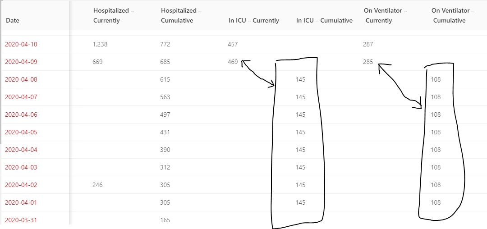

[VA] Remove one-time cumulative vent and icu numbers from reporting
State or US: Virginia
Describe the problem This is a number that was retrieved once from reporting and carried for one week https://www.facebook.com/GovernorVA/videos/218402129225741/ reporting an errant cumulative number for one week is skewing the national numbers. We should either remove the numbers, or carry them forward.
Link to data source 
Additionally, VA has a 4 day gap in cumulative hospitalizations: 2020-04-14 - 2020-04-11
muamichali added the label Data quality on November 5, 2020 at 3:32 pm
space-buzzer commented on November 5, 2020 at 4:26 pm
This is updated: the values in cumulative ICU and cumulative on ventilator were deleted
space-buzzer closed the issue on November 5, 2020 at 4:26 pm
space-buzzer reopened this on November 5, 2020 at 4:48 pm
muamichali closed the issue on November 6, 2020 at 8:45 am
space-buzzer commented on November 6, 2020 at 9:58 am
Similarly, fix a 4-day gap in in cumulative hospitalized between 2020-04-11 and 2020-04-14
Parent issue for cumulative hospitalizations